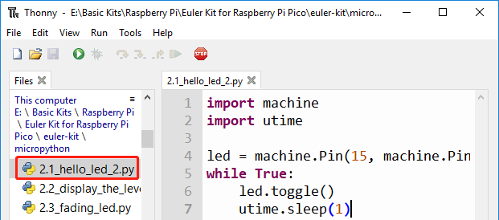
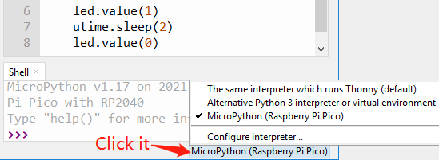
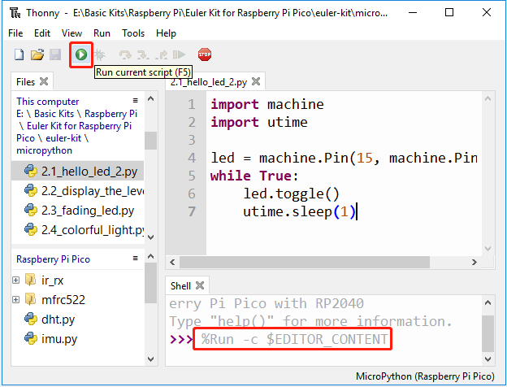
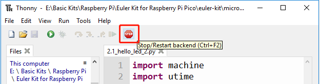
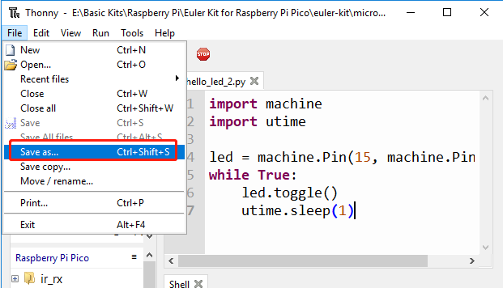
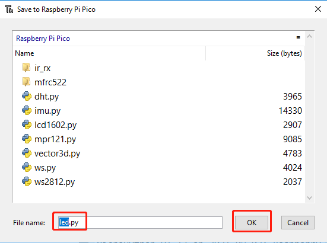
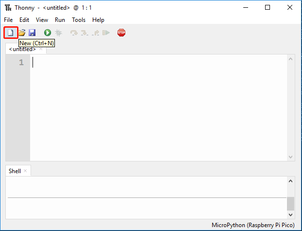
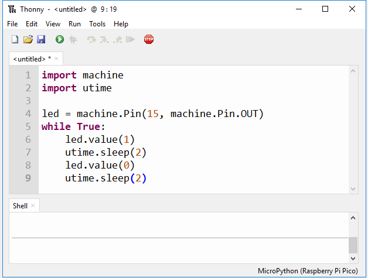
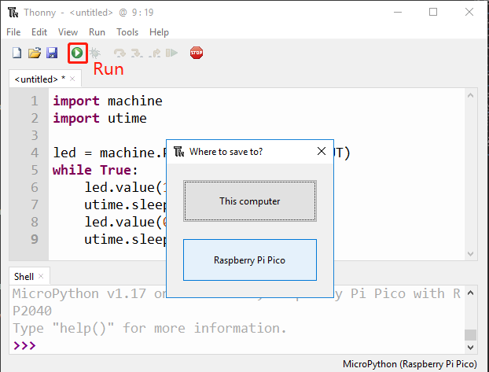

Note
Hello, welcome to the SunFounder Raspberry Pi & Arduino & ESP32 Enthusiasts Community on Facebook! Dive deeper into Raspberry Pi, Arduino, and ESP32 with fellow enthusiasts.
Why Join?
Expert Support: Solve post-sale issues and technical challenges with help from our community and team.
Learn & Share: Exchange tips and tutorials to enhance your skills.
Exclusive Previews: Get early access to new product announcements and sneak peeks.
Special Discounts: Enjoy exclusive discounts on our newest products.
Festive Promotions and Giveaways: Take part in giveaways and holiday promotions.
👉 Ready to explore and create with us? Click [here] and join today!
1.5 Quick Guide on Thonny¶
Open and Run Code Directly¶
The code section in the projects tells you exactly which code is used, so double-click on the .py file with the serial number in the euler-kit/micropython/ path to open it.
However, you must first download the package and upload the library, as described in 1.4 Download and Upload the Code.
Open Code
For example,
2.1_hello_led.py.If you double click on it, a new window will open on the right. You can open more than one code at the same time.

Select Correct Interpreter
Use a micro USB cable to connect the Pico to your computer and select the “MicroPython (Raspberry Pi Pico)” interpreter.

Run the Code
To run the script, click the Run current script button or press F5.

If the code contains any information that needs to be printed, it will appear in the Shell; otherwise, only the following information will appear.
Click View -> Edit to open the Shell window if it doesn’t appear on your Thonny.
MicroPython v1.17 on 2021-09-02; Raspberry Pi Pico with RP2040 Type "help()" for more information. >>> %Run -c $EDITOR_CONTENT
The first line shows the version of MicroPython, the date, and your device information.
The second line prompts you to enter “help()” to get some help.
The third line is a command from Thonny telling the MicroPython interpreter on your Pico to run the contents of the script area - “EDITOR_CONTENT”.
If there is any message after the third line, it is usually a message that you tell MicroPython to print, or an error message for the code.
Stop Running

To stop the running code, click the Stop/Restart backend button. The %RUN -c $EDITOR_CONTENT command will disappear after stopping.
Save or Save as
You can save changes made to the open example by pressing Ctrl+S or clicking the Save button on Thonny.
The code can be saved as a separate file within the Raspberry Pi Pico by clicking on File -> Save As.

Select Raspberry Pi Pico.

Then click OK after entering the file name and extension .py. On the Raspberry Pi Pico drive, you will see your saved file.

Note
Regardless of what name you give your code, it’s best to describe what type of code it is, and not give it a meaningless name like
abc.py. When you save the code asmain.py, it will run automatically when the power is turned on.
Create File and Run it¶
The code is shown directly in the code section. You can copy it to Thonny and run it as follows.
Create a new file
Open Thonny IDE, click New button to create a new blank file.

Copy Code
Copy the code from the project to the Thonny IDE.

Select Correct Interpreter
Plug the Pico into your computer with a micro USB cable and select the “MicroPython (Raspberry Pi Pico)” interpreter in the bottom right corner.
Run and Save the Code
You need click Run Current Script or simply press F5 to run it. If your code has not been saved, a window will pop up asking to save to This computer or Raspberry Pi Pico.

Note
Thonny saves your program on the Raspberry Pi Pico when you tell him to, so if you unplug the Pico and plug it into someone else’s computer, your program remains intact.
Click OK after selecting the location, naming the file and adding the extension .py.
Note
Regardless of what name you give your code, it’s best to describe what type of code it is, and not give it a meaningless name like
abc.py. When you save the code asmain.py, it will run automatically when the power is turned on.Once your program is saved, it will run automatically and you will see the following information in the Shell area.
Click View -> Edit to open the Shell window if it does not appear on your Thonny.
MicroPython v1.17 on 2021-09-02; Raspberry Pi Pico with RP2040 Type "help()" for more information. >>> %Run -c $EDITOR_CONTENT
The first line shows the version of MicroPython, the date, and your device information.
The second line prompts you to enter “help()” to get some help.
The third line is a command from Thonny telling the MicroPython interpreter on your Pico to run the contents of the script area - “EDITOR_CONTENT”.
If there is any message after the third line, it is usually a message that you tell MicroPython to print, or an error message for the code.
Stop Running
To stop the running code, click the Stop/Restart backend button. The %RUN -c $EDITOR_CONTENT command will disappear after stopping.
Open File
Here are two ways to open a saved code file.
The first method is to click the open icon on the Thonny toolbar, just like when you save a program, you will be asked if you want to open it from this computer or Raspberry Pi Pico, for example, click Raspberry Pi Pico and you will see a list of all the programs you have saved on the Pico.
The second is to open the file preview directly by clicking View->**File**-> and then double-clicking on the corresponding
.pyfile to open it.